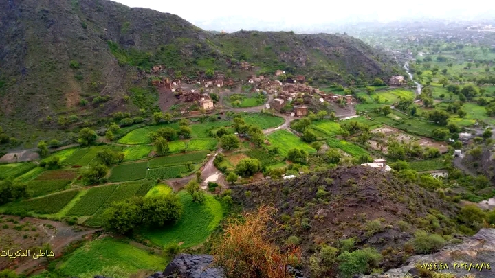
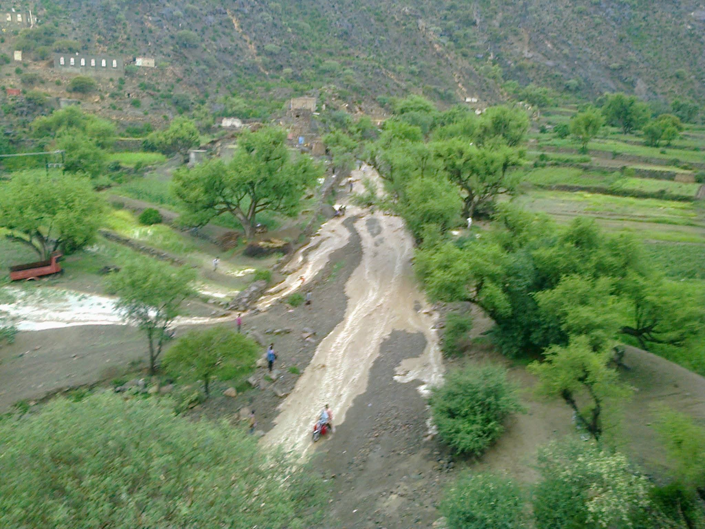
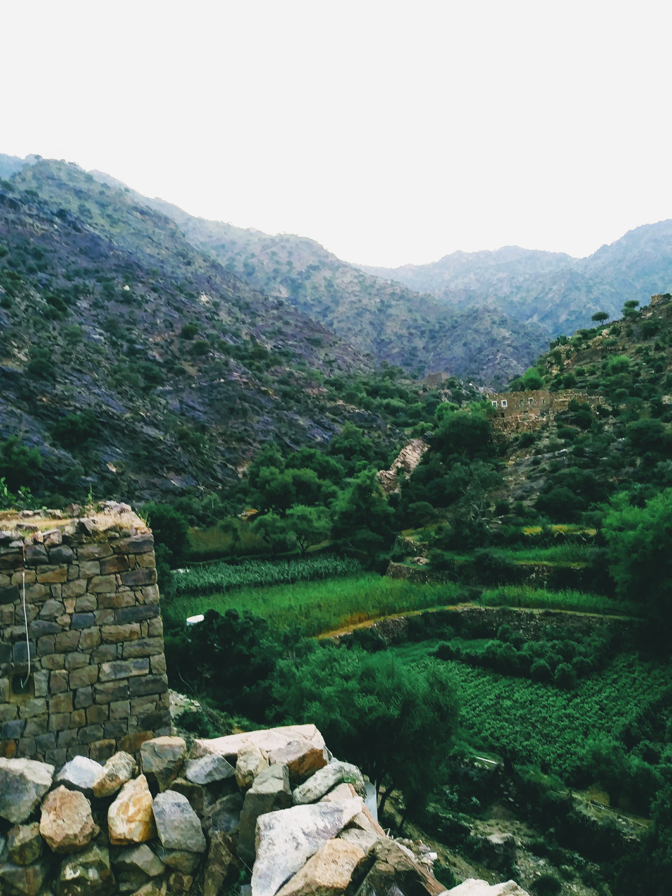
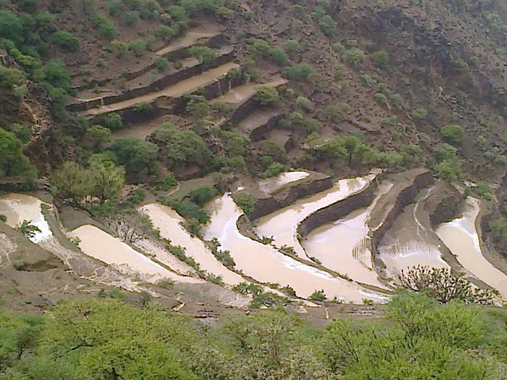
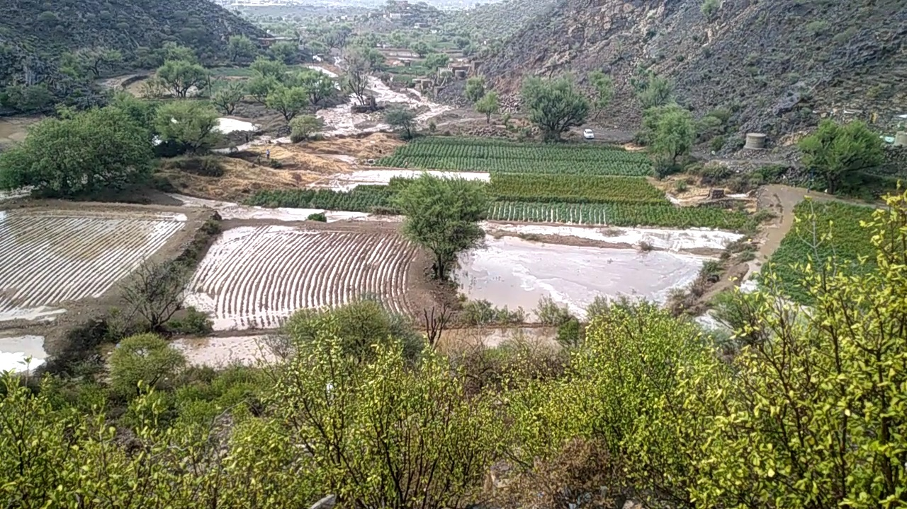
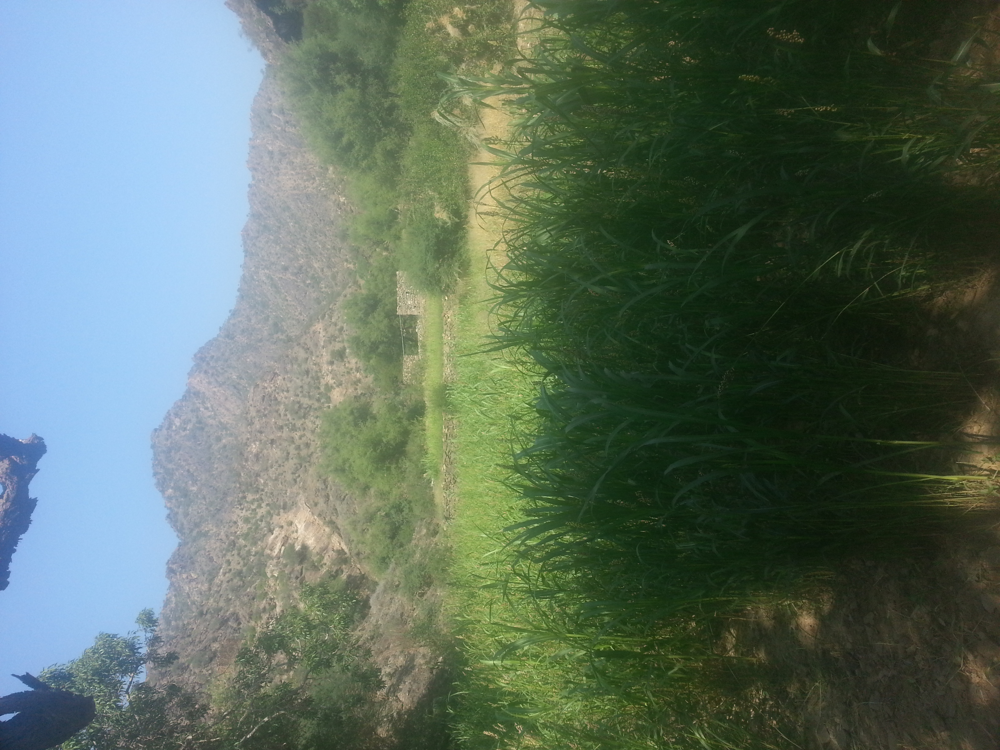
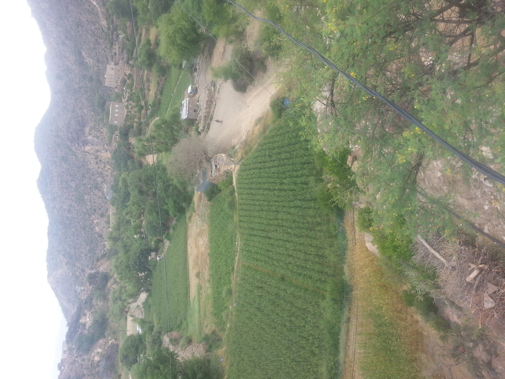
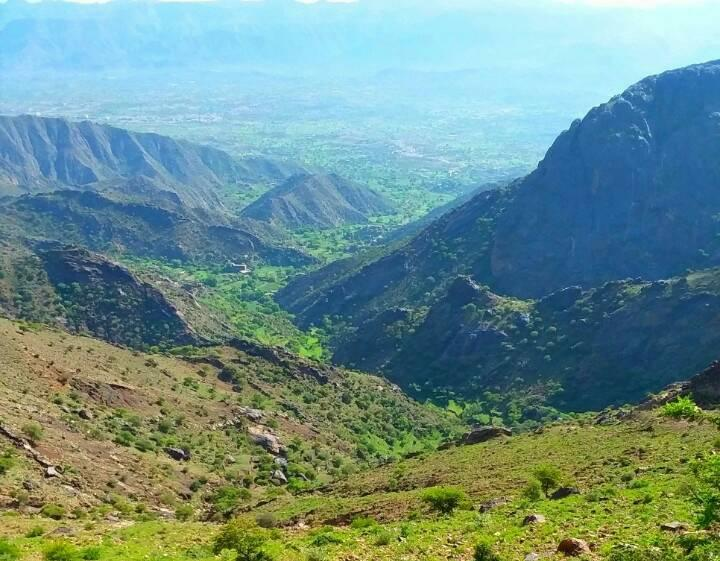
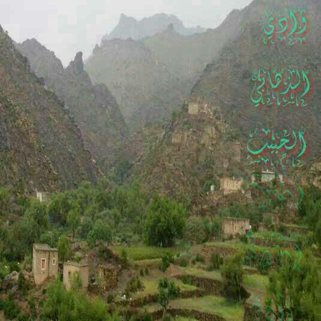

الذهابي — درة مديرية الضالع. حيث تتنفس الطبيعة عبق التاريخ، وتعانق المدرجات الخضراء قمم الجبال الصخرية. و البيوت الحجرية العتيقة، كل زاوية تحكي قصة الأجداد والكرم اليمني الأصيل. ✨

المساحة الخضراء
مزارع وادي الذهابي، بساط أخضر نضر من محاصيل القات في بطن الوادي الخصيب، تعكس فن الزراعة الجبلية.

مدخل وادي الذهابي
صورة تظهر مدخل وادي الذهابي مع وصول السيول الخصب، محاطاً بالجبال الشاهقة والبيوت الحجرية القديمة التي تعانق السحاب.

مساحات خضراء شاسعة
إطلالة على أراضي الذهابي الواسعة، لوحة فنية ترسمها مزارع القات المتدرجة على طول الوادي.

مدرجات وادي الذهابي
هنا ترتفع مدرجات وادي الذهابي الشامخة، المليئة بمياه الأمطار العذبة لتروي عطش الوادي الأخضر وتحافظ على الوادي.

🌧️ الإطلالة الجميلة بعد الامطار
الإطلالة الجميلة بعد الأمطار في الذهابي، .والسيول الجارية

مزارع الزراعة
الإطلالةالجميلة في الخريف. الإطلالة الجميلة التي لا توصف

مزارع القات
مزارع قرية الذهابي الخضراء، تنتج أفضل أنواع القات بفضل مناخها المعتدل وتربتها الخصبة وسط الجبال.

بانوراما وادي الذهابي
إطلالة شاملة من قمة جبل الذهابي، تظهر لكمة صلاح ببيوتها وقراها المتناثرة وسط الجبال الوعرة.

جمال وادي الذهابي
وادي الذهابي، مساحة واسعة من الطبيعة الساحرة، حيث تلتقي المياه العذبة بالخضرة الدائمة وتغرد العصافير.

جبال الذهابي الشاهقة
قمم جبال الذهابي الصخرية الصلبة، تتحدى السماء وتحيط بالقرية كسور طبيعي يحمي تراثها.
إحصائيات الزراعة
| النوع الزراعي | الوصف |
|---|---|
| مزارع القات | منتشرة بكثرة في الأودية والسفوح، تشتهر بجودتها الفائقة في الذهابي لكمة صلاح |
| الموارد المائية | الامطار في الذهابي والينابيع العذبة تغذي المدرجات الخضراء طوال العام |
أبرز الأنشطة في الذهابي
- 🚶 المشي لمسافات طويلة في الأودية والمسارات الجبلية.
- تصوير الطبيعة البكر والمدرجات الخضراء وقت الغروب.
- استكشاف المواقع الأثرية .
روابط ذات صلة
🗺️ اكتشف خريطة الذهابي
انقر على الرابط أدناه لاستكشاف المعالم الطبيعية، المدرجات، والمواقع الأثرية على خريطة تفاعلية مفصلة.
ادخل إلى الخريطة التفصيليةتشمل الخريطة: المدرجات الخضراء، القرى القديمة، مسار الأودية